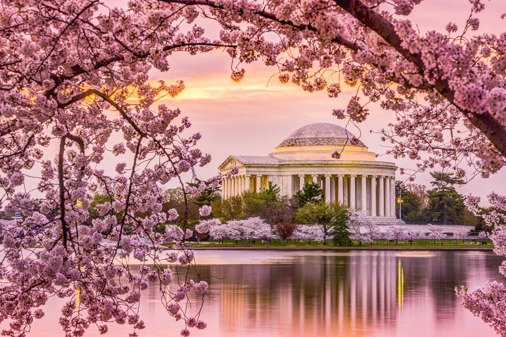

Cherry Blossom Festival 2022

The average peak bloom date, which is when 70% of the flowers of the cherry blossom trees are open, is around April 4.In the past, peak bloom has occurred as early as March 15 and as late as April 18..
This is a link
Let's go to HOME.